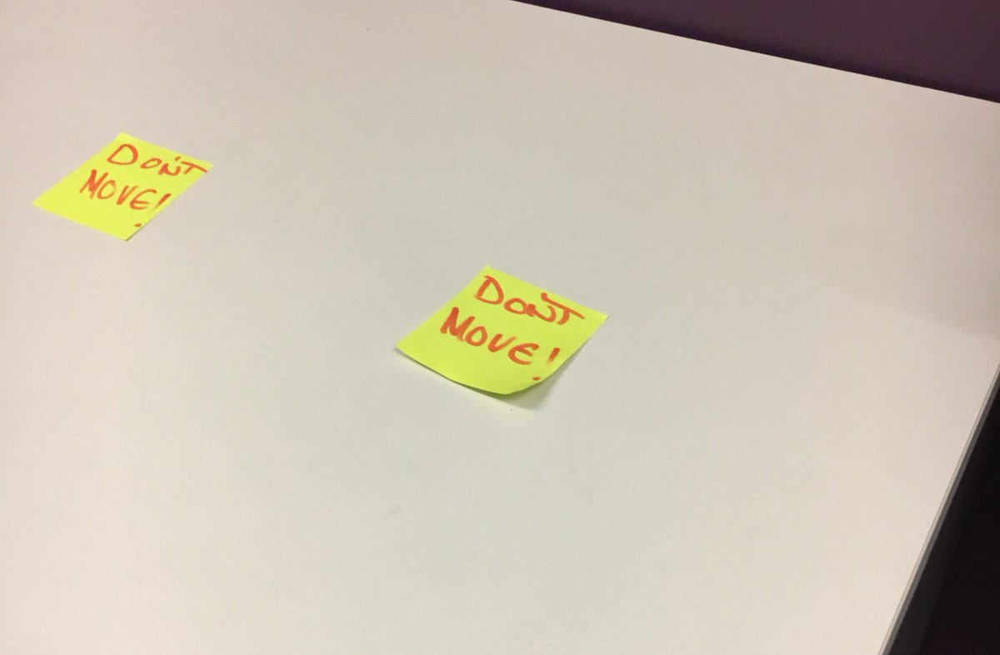

  	<div class="flex-wrap">
      
  	  <article class="tweet  " id="main">
  	    <p class="full_text">
  	      Ok I've been standing here for 25 minutes. Is something supposed to happen? <div class="gallery"><ul><li><a href="../../tweets_media/897541020098871296-DHS0ygcV0AEmdmJ.jpg"></a></li></ul></div>
  	    </p>
  	    <p class="created_at">
  	      8/15/2017, 12:30:29 PM
  	    </p>
  	    <p class="favorite_count">Favs: 2</p>
  	    <p class="retweet_count">Retweets: 0</p>
  	    <a class="permalink" href="../897541020098871296">link</a>
  	  </article>

  	</div>
  </div>
